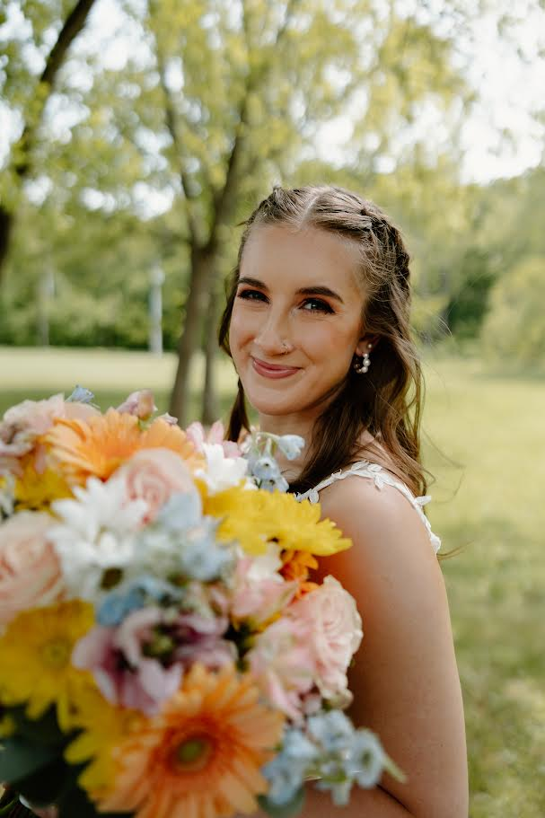

Bio

Hailie Adkins, based in Ashland, Kentucky, is a student at Marshall University majoring in Filmmaking with a minor in Film Studies.
Her work explores a variety of styles and genres, allowing her to remain versatile as a filmmaker. Hailie is especially drawn to documentary filmmaking for its honest storytelling, emotional depth, and ability to connect audiences through real human experiences.
She has gained experience as a director, editor, writer, actor, cinematographer, and producer. Through her academic and creative journey, she continues to build valuable knowledge, skills, and professional relationships.
Hailie's future goals include documenting weddings, events, and personal stories in a meaningful and lasting way.